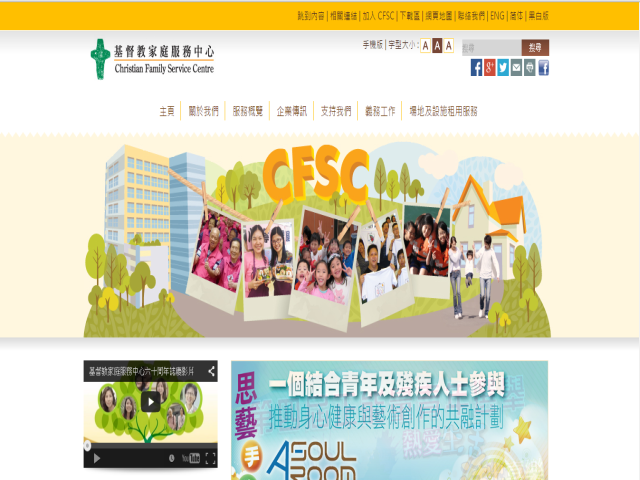

基督教家庭服務中心
目的與使命
基督教家庭服務中心（C.F.S.C.）為香港一間致力支援及促進家庭功能的社會福利機構，自1954年創立以來，一直為東九龍區居民提供不同類型服務。 60年來，因應社會的改變與需要，本會不斷更新原有服務，同時亦拓展新的工作方向。
基督教家庭服務中心以「以人為本，以家為心」為宗旨，本著基督的愛為有需要人士提供優質服務，致力支持及促進家庭功能， 並創造一個可供人們成長及改進的環境。此外，基督教家庭服務中心抱持下列原則和價值觀發展服務：重視家庭、專業服務、完善管理、力求創新。
服務與活動
服務概覽
- 綜合家庭支援服務
- 兒童及家庭服務
- 青年服務
- 綜合長者照顧服務
- 長者照顧服務
- 長者社區服務
- 綜合復康服務
- 殘疾人士綜合服務
- 殘疾人士發展及共融服務
- 精神健康服務
- 醫療健康服務
- 社區發展服務
- 環保及綠色生活
- 僱員服務顧問
- 全人發展及專業培訓
籌募活動（2014年）
- 齊來參與「敬老護老愛心券」慈善籌款運動 聚沙成塔 協助改善長者服務設施
企業伙伴活動（2014年）
- 唐記包點「2014美味義廚」活動 教授長者製作美點 盡顯愛心
- 小白兔信箱 以書信關懷小朋友 獲得「香港微電影天馬獎 2014」鼎力支持
就業與義工
就業機會
基督教家庭服務中心現有不同的就業機會，例如個人照顧員、服務助理等等。欲了解最新就業資訊，可瀏覽網址：http://www.cfsc.org.hk/tc/joinUs
| 日期 | 組織 | 職位 |
|---|---|---|
| 2015-03-20 - 2015-04-03 | MD/WM-CE | 司機兼工友 MD/WM-CE |
| 2015-03-20 - 2015-04-03 | PCW-TD | 個人照顧員 PCW-TD |
| 2015-03-20 - 2015-04-03 | SA-TD | 服務助理 SA-TD |
義務工作
如欲成為基督教家庭服務中心的義工，支援及協助社會上有需要的人士，可到下列網址填寫申請表。 中心將會因應各人的興趣及專長安排相關的義務工作。
按此填寫申請表格聯絡資料
總辦事處：基督教家庭服務中心
- 地址 ： 九龍觀塘翠屏道3號10樓
- 電話 ： (852)2861 0283
- 傳真 ： (852)2520 0438
- 電郵 ： enquiry@cfsc.org.hk
- 網址 ： http://www.cfsc.org.hk/
網頁截面：